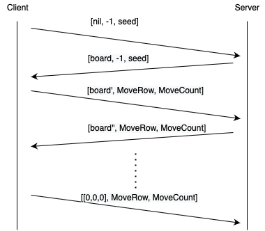
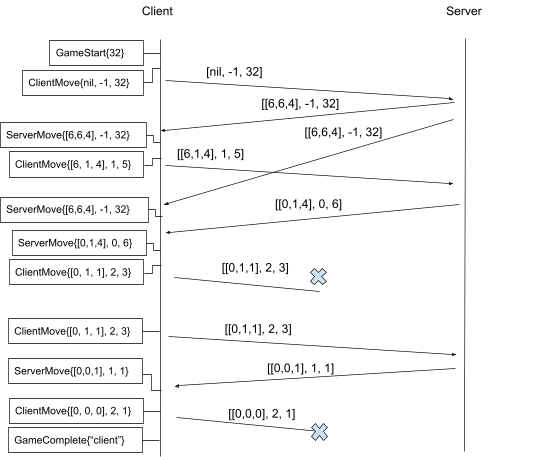

416 Distributed Systems: Assignment 1 [Nim]Due: January 24 at 6pm PSTWinter 2022
|
|
In this assignment you will get started with programming in the Go language. To solve this assignment you will need to install Go, figure out how to compile, run, and debug a Go program. You will practice Go in the context of the two-person normal play version of the game of Nim. Specifically, you will implement the client codebase and we will provide you with a running server that you can test against. Overview
Go (or This assignment's objective in particular is to help you get to grips with Go's basic features. You will learn:
This assignment will also introduce you to our tracing library. You'll use this library throughout the course to test and debug your Go systems, And, we will use this library to help us mark your submitted solutions. Nim overviewNim is a two-player game. A game of nim starts with a board that contains some number of rows, and each row contains some number of coins. The two players take turns removing any non-zero number of coins, with the constraint that all the coins that are removed in a turn must come from a single row. A player's goal in nim is to make the last move, taking the final coin. High-level system descriptionThere are two kinds of nodes in the system: a server (that we will implement), and a client (that you will implement), which will play a game of Nim against each other. You will test and debug your solution against a running server instance, but you will not have access to the server code. The server listens to connections from clients and expects UDP packets containing a serialized [StateMoveMessage]. This is a Go struct and the only message format used in this assignment. There are multiple special values that represent different things, but you only have to worry about one format they are packaged in. This is described further below. The client reads the [config/client_config.json] JSON file. This file specifies the UDP IP:port of the server (other player) that it is to connect to. The client receives a randomization seed on the command line (the only command line input). Then, the client follows the following steps:
The diagram below is a time-space diagram that illustrates the client-server interactions described above. Messages are arrows between the two timelines, from client to server, or from server to client. Message content is listed between the brackets on each message arrow:  Message FormatThe declaration of [StateMoveMessage] is:
type StateMoveMessage struct{
GameState []uint8
MoveRow int8
MoveCount int8
}
In each message:
Message LossPackets sent via UDP are not guaranteed to arrive at their destination. This means there will be no reply received if either the client message or the server message is dropped by the network. It is the client's responsibility to re-attempt a message exchange, after a timeout of 1s (after not receiving a response from the server 1s after sending a message to the server). You can assume that the server will hang onto the last known state indefinitely, until the client is able to make progress (get a message through to the server). Note that when using UDP, a message may also arrive out of order, and/or be duplicated by the network. Your solution must be able to deal with both of these cases. If the server makes the last move, the client can terminate on receiving this move. If the client makes the last move, the client can terminate as soon as it transmits the move message, regardless of delivery at the server. Tracing LibraryThis assignment introduces the tracing library, which will be used to test whether your code is behaving correctly. The library has online documentation that you should familiarize yourself with. Tracing is like logging. We say that a process records/reports/traces actions or events. What this means is that the process calls a tracing library method to record a particular struct type. A key difference with logging is that tracing can be used to reconcile ordering of events across networked nodes. To trace your program, the program needs to connect to a tracing server. In this assignment your client will have its own tracing server – your client code will need to start this tracing server, connect to it, run the client logic while recording actions at specific points in the execution, and later terminate the tracing server before exiting. A client-server example that illustrates how to use the tracing library can be found here. (Note, however, that in this example, the client and server use the same tracing server and also use tracing tokens. In this assignment your client will have its own tracing server and you will not need to deal with tracing tokens.) Tracing SemanticsYour solution must precisely follow the tracing semantics described below. Your grade depends on the type of tracing log that your solution generates. For example, if traced actions are in the wrong order, or are missing, then you will lose points. You will use the tracing library to report actions using calls to trace.RecordAction, using a singular trace object obtained via tracer.CreateTrace. You only need to implement tracing for actions within your own client. There are four types of actions that your client code must trace:
Example ExecutionBelow is an example sequence of messages from a correct execution of this system with one client and one server (these messages also illustrated in a diagram below):
From client: StateMoveMessage {
GameState: nil
MoveRow: -1
MoveCount: 32
}
From server: StateMoveMessage {
GameState: [6,6,4]
MoveRow: -1
MoveCount: 32
}
From client: StateMoveMessage {
GameState: [6,1,4]
MoveRow: 1
MoveCount: 5
}
From server: StateMoveMessage {
GameState: [6,6,4]
MoveRow: -1
MoveCount: 32
} (duplicated)
From server: StateMoveMessage {
GameState: [0,1,4]
MoveRow: 0
MoveCount: 6
}
From client: StateMoveMessage {
GameState: [0,1,1]
MoveRow: 2
MoveCount: 3
} (lost)
From client: StateMoveMessage {
GameState: [0,1,1]
MoveRow: 2
MoveCount: 3
}
From server: StateMoveMessage {
GameState: [0,0,1]
MoveRow: 1
MoveCount: 1
}
From client: StateMoveMessage {
GameState: [0,0,0]
MoveRow: 2
MoveCount: 1
} (lost)
The diagram below illustrates the above execution as a time space diagram. In addition, this diagram lists the traced actions as boxes on the client timeline. Note that the traced actions are located at very precise points in the client timeline relative to when the client received or sent each message.  An important feature of the above execution (and tracing semantics in this assignment) is that actions are recorded in response to all received/generated messages (i.e., even those that are received as duplicated by the client or those that are re-sent by the client because of message loss). Solution Spec
You are to write a single go program called client.go that acts as a client in the protocol described above. Your program must be executable from the terminal using the following command: The ports to be used by the client to connect to the server at and to listen on are provided/configured in [config/client_config.json].
Your solution cannot use any external libraries other than those related to the tracing library. Assumptions you can make
Assumptions you cannot make
Protocol corner cases
Implementation requirements
Starter code and testing serversWe make four files available for you as starter code for this assignment, as well as an automated checking tool to analyze your distributed traces.
The list of nim servers you can test against will be posted to piazza. The provided checking tool's output will be strongly correlated with what our autograder will consider correct (though our test scenarios themselves remain secret), so make sure to try it. It is much easier to investigate and ask questions before the deadline than to be surprised after. Handin instructionsKeep the provided file layout at the top-level in your solution repository. You may include additional files, but we do not expect this will be necessary. Do not reference any additional libraries in your solution.
Your code must be in a single client.go file, including the tracing server set up.
You shall not use a separate file to run the tracing server.
(This requirement only affects your Go files, you should still have a config file
for your tracing server, and place it at config/tracing_server_config.json).
For a list of server machines you can use, please
see this
page. Note that the right version of Go (version 1.16.7) is
installed in More instructions about submitting using a git repository via https://github.students.cs.ubc.ca/ will be posted here and on Piazza. Grading Criteria
Advice
Make sure to follow the course collaboration policy and refer to the submission instructions that detail how to submit your solution. |
|
|